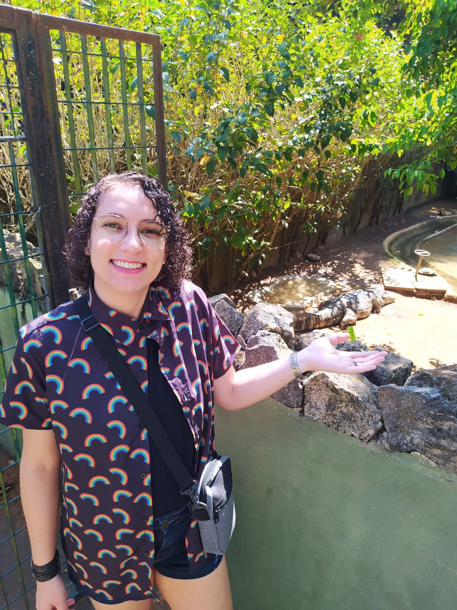

Olá! Sou Kevelin Barbosa Xavier e este é meu portifólio profissonal.
Sobre mim:

Sou bióloga, mestre em genética e melhoramento de plantas e quase doutora em biotecnologia vegetal. Atualmente trabalho com análises transcriptômicas de cannabis, tendo experiência com data science. Estou percorrendo o caminho do desenvolvimento front-end desde que decidi transformar os dados da minha tese num webapp.
Vem conhecer meu trabalho!
- Quem sou eu
- Meus projetos